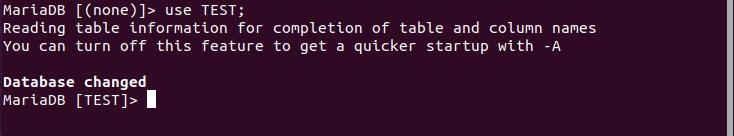

もくじ
1.デスクトップ画面で右クリック
2.ディスプレイの設定をクリック
3.解像度 800x600(4;3)の欄をクリックすると、画面サイズが選択できます。
4.パソコンと画面サイズによって内容は変わりますが、1440x900か1280x800がおすすめです。
ウィンドウの色を黒くすることで、目に優しい表示にすることが出来ます。
同じく右クリックで設定を表示させ、外観から暗いを設定することで、ウィンドウを黒くさせられます。
タスクバーの位置と大きさを変更出来ます。
・net-toolパッケージのインストール
・ファイアーウォールの設定
以下のコマンドを実行し、atomをインストールしましょう。
アプリケーションが立ち上がります。
atomと検索するとatomが出てくる筈です。
便利なテキストエディタなので、ダウンロードしておきましょう
操作権限が与えられていないファイルを操作するとき、 初期状態では毎回パスワードを2回尋ねられるので、権限を設定します。
・htmlフォルダに権限を付与
atomには便利なプラグインが用意されています。
個人的におすすめなプラグインを紹介します。
日本語化プラグイン
japanese-menu
インストールすると、メニューバーの文字などが日本語化されます。
拡張子別でアイコンを表示してくれるプラグイン
file-icons
ターミナルが動かせるプラグイン
platformio-ide-terminal
左下の+マークから起動し、pythonが入っている場合、pythonを下から出てきた画面で実行できます。
ubuntuでは以下のように入力することでpythonがインストールされます。
選択した文字と同じ文字をハイライト表示する
selection-highlight
ドラッグで選択した文字がハイライト表示されます。
ドラッグで複数行選択
sublime-style-colum-selection Ctrl+Altを押しながらドラッグで選択するとカーソルが複数行に表示されます。
atomではデフォルトでCtrlを押しながらクリックをすることで複数個所の選択ができますが、
このプラグインにより、一瞬で複数行の選択ができる様になります。
コードの整形プラグイン
atom beautify 編集画面で右クリックから「Beauty editor contents」をクリックするだけで、ソースコードを整形してくれます。
改行がされていないjavascriptやcssを見やすくしたい時に役に立ちます。
相対パスを入力補完する
autocomplete-paths
パスを入力るときに入力補完をしてくれます。
例えば、ファイルの参照部分で「./」で現在ディレクトリを示すと、 現在ディレクトリ内のファイルが候補として出てきます。
カラーコードに色をつけてくれるプラグイン
pigments
#fffaaaのようなカラーコードを認識し、文字の背景に色がつきます。
atom内で検索をする
web-search
調べたい文字を選択し、みっぎクリックからweb-searchを選択することで、 googleかwikiかという選択をするURLが表示されます。
選択をすることで、新しいウィンドウが表示され、指定したサイトで検索ができます。
タスクバーに紙袋のようなアイコンがあるのでクリックします。
編集者のおすすめにあると思うので、そこからインストールします。
アプリ一覧に表示されれば、インストールが完了です。
・wslのインストール
デフォルトでubuntuが一緒にインストールされます。
別のディストリビューションを使いたい場合は、下記のように-dオプションを使って指定可能です。
・別のディストリビューションを追加
wsl使用方法
スタートメニューから起動するか、ターミナルでアクセスして使います。
windowsを一度再起動したら、起動できます。
・WSLのシャットダウン
- Virtualboxのインストール
- linuxの初期設定
- 基本操作
- 内臓アプリ
- atomのインストール
- discordのインストール
- OBSのインストール
- Zoomのインストール
- WSLのインストールと使用
Virtualboxのインストール
linuxの初期設定
ディスプレイのサイズを変えられます。お好みの大きさに変更しましょう。1.デスクトップ画面で右クリック
2.ディスプレイの設定をクリック
3.解像度 800x600(4;3)の欄をクリックすると、画面サイズが選択できます。
4.パソコンと画面サイズによって内容は変わりますが、1440x900か1280x800がおすすめです。
ウィンドウの色を黒くすることで、目に優しい表示にすることが出来ます。
同じく右クリックで設定を表示させ、外観から暗いを設定することで、ウィンドウを黒くさせられます。
タスクバーの位置と大きさを変更出来ます。
・net-toolパッケージのインストール
- sudo apt install net-tools#このコマンドにより、ifconfigを実行出来るようにします。
- sudo ufw allow 20/tcp
- sudo ufw allow 21/tcp
- sudo ufw allow 40000:50000/tcp
- sudo ufw allow 990/tcp
- sudo ufw enable
基本操作
内臓アプリ
atomのインストール
aptにリポジトリを登録し、インストールをしていきます。以下のコマンドを実行し、atomをインストールしましょう。
- wget -qO - https://packagecloud.io/AtomEditor/atom/gpgkey | sudo apt-key add -
- sudo sh -c 'echo "deb [arch=amd64] https://packagecloud.io/AtomEditor/atom/any/ any main" > /etc/apt/sources.list.d/atom.list'
- sudo apt update
- sudo apt install atom
atomと検索するとatomが出てくる筈です。
便利なテキストエディタなので、ダウンロードしておきましょう
操作権限が与えられていないファイルを操作するとき、 初期状態では毎回パスワードを2回尋ねられるので、権限を設定します。
・htmlフォルダに権限を付与
- sudo chown -R ユーザー名 /var/www#指定したディレクトリの操作をユーザーに許可します。
個人的におすすめなプラグインを紹介します。
日本語化プラグイン
japanese-menu
インストールすると、メニューバーの文字などが日本語化されます。
拡張子別でアイコンを表示してくれるプラグイン
file-icons
ターミナルが動かせるプラグイン
platformio-ide-terminal
左下の+マークから起動し、pythonが入っている場合、pythonを下から出てきた画面で実行できます。
ubuntuでは以下のように入力することでpythonがインストールされます。
- sudo apt install -y python3-pip#pythonインストールコマンド
- python3 ファイル名#実行コマンド
選択した文字と同じ文字をハイライト表示する
selection-highlight
ドラッグで選択した文字がハイライト表示されます。
ドラッグで複数行選択
sublime-style-colum-selection Ctrl+Altを押しながらドラッグで選択するとカーソルが複数行に表示されます。
atomではデフォルトでCtrlを押しながらクリックをすることで複数個所の選択ができますが、
このプラグインにより、一瞬で複数行の選択ができる様になります。
コードの整形プラグイン
atom beautify 編集画面で右クリックから「Beauty editor contents」をクリックするだけで、ソースコードを整形してくれます。
改行がされていないjavascriptやcssを見やすくしたい時に役に立ちます。
相対パスを入力補完する
autocomplete-paths
パスを入力るときに入力補完をしてくれます。
例えば、ファイルの参照部分で「./」で現在ディレクトリを示すと、 現在ディレクトリ内のファイルが候補として出てきます。
カラーコードに色をつけてくれるプラグイン
pigments
#fffaaaのようなカラーコードを認識し、文字の背景に色がつきます。
atom内で検索をする
web-search
調べたい文字を選択し、みっぎクリックからweb-searchを選択することで、 googleかwikiかという選択をするURLが表示されます。
選択をすることで、新しいウィンドウが表示され、指定したサイトで検索ができます。
discordのインストール
ubuntu softwareからインストールします。タスクバーに紙袋のようなアイコンがあるのでクリックします。
編集者のおすすめにあると思うので、そこからインストールします。
アプリ一覧に表示されれば、インストールが完了です。
- wget https://discordapp.com/api/download/canary?platform=linux
- sudo dpkg -i /path/to/discord-canary-0.0.11.deb
OBSのインストール
- sudo apt install ffmpeg
- sudo apt install v4l2loopback-dkms
- sudo add-apt-repository ppa:obsproject/obs-studio
- sudo apt update
- sudo apt install obs-studio
Zoomのインストール
WSLのインストールと使用
windowsのコマンドプロンプトを管理者権限で立ち上げます。・wslのインストール
- wsl --install#wslのインストールコマンド
別のディストリビューションを使いたい場合は、下記のように-dオプションを使って指定可能です。
・別のディストリビューションを追加
- wsl --install -d Debian#Debianを追加
wsl使用方法
スタートメニューから起動するか、ターミナルでアクセスして使います。
windowsを一度再起動したら、起動できます。
・WSLのシャットダウン
- wsl --shutdown#シャットダウンコマンド
もくじ
今回使うのはapache(アパッチ)と呼ばれる、オープンソースのクロスプラットフォームのWebサーバソフトウェアです。
クロスプラットフォームとは、異なるプラットフォーム、例えばWindows・macOS・Linuxなどのように、
仕様が全く異なる機械（ハードウェア）またはオペレーティングシステム）上で、 同じ仕様のものを動かすことが出来るプログラム（ソフトウェア）です。
マルチプラットフォームとも呼ばれます。
・aptパッケージのアップデート
(コマンドの説明)
これでPHPがインストールできました。
mariadbとphpの接続用パッケージのインストール
ここまで実行したら、apacheを再起動しましょう。
ブラウザでphpinfoファイルを開くと、このようにインストールされたモジュールの一覧が表示されたページになっています。
確認してみると、PDOのドライバもあるはずです。
F4でページ内の文字検索ができます。
設定ファイルはLoaded Configuration Fileという欄でディレクトリが記述されています。
設定ファイルについて詳しく知る
mariadbとphpの接続をする
次はPHPファイルを作ってサーバーが動いているかを確認してみましょう。
apacheでの公開ディレクトリに行き、index.phpファイルを作成しました。
中身を書き加えて、IPアドレスを入力して書いた通りの表示になっているかを確認しましょう。
データベース接続確認
以下のコードをphpファイルに記述します。
接続が成功すると、接続成功という文字が表示され、失敗するとDB接続エラーと表示されます。
指定した名前のデータベースを作成していないと、エラーになります。
mariadbで、データーベースを作成し、その名前をmydbの部分に記述しましょう。
ユーザー名とパスワードはmariadb上で作成してあるものかrootを入れます。
データベースに接続できる権限がユーザーに付与されていなかった場合、以下のような表示が出ます。
・PHP側で接続IPを間違えている場合
・ドライバが無い場合
webサーバー
webサーバーを構築するには、パッケージのインストールが必要になります。今回使うのはapache(アパッチ)と呼ばれる、オープンソースのクロスプラットフォームのWebサーバソフトウェアです。
クロスプラットフォームとは、異なるプラットフォーム、例えばWindows・macOS・Linuxなどのように、
仕様が全く異なる機械（ハードウェア）またはオペレーティングシステム）上で、 同じ仕様のものを動かすことが出来るプログラム（ソフトウェア）です。
マルチプラットフォームとも呼ばれます。
・aptパッケージのアップデート
- sudo apt update
- sudo apt upgrade
(コマンドの説明)
| sudo |
管理者権限でコマンドを実行するという指定 |
| apt |
Linuxでソフトウェアの導入や管理、削除に用いられるパッケージ管理システムの一つ。 |
| update |
アップデート(更新) |
| 結果 | 管理者権限でaptをアップデートする。 |
PHPの動作確認
- sudo apt install apache2
| sudo |
管理者権限でコマンドを実行するという指定 |
| apt |
Linuxでソフトウェアの導入や管理、削除に用いられるパッケージ管理システムの一つ。 |
| install |
インストール |
| apache2 |
アパッチ2をインストール。 アパッチは世界的に最も普及しているWebサーバ（HTTPサーバ）ソフトウェアの一つ。 |
| 結果 | 管理者権限でaptをアップデートする。 |
- sudo apt install software-properties-common
- sudo add-apt-repository ppa:ondrej/php
- sudo apt install php8.1
mariadbとphpの接続用パッケージのインストール
- sudo apt install php libapache2-mod-php php-mysql
- apt search php8.1 | grep php8.1#phpのドライバを検索。ドライバの一覧が表示されます。
- sudo apt install php8.1-mysql#mysqlドライバのインストール
- php -m#インストールの確認をします。モジュールを表示し、pdo_mysqlがあればインストールができました
- #諸々のファイルは以下に作成されます。
- /usr/lib/php/20170718/pdo_mysql.sosoファイル
- /etc/php/8.1/mods-available/pdo_mysql.ini設定ファイル
- PHPの確認
- sudo chown -R ユーザー名 /var/www権限を取得
- echo '<?php echo phpinfo();' > /var/www/html/phpinfo.phpphpファイルの作成
- sudo systemctl restart apache2
確認してみると、PDOのドライバもあるはずです。
F4でページ内の文字検索ができます。
設定ファイルはLoaded Configuration Fileという欄でディレクトリが記述されています。
設定ファイルについて詳しく知る
mariadbとphpの接続をする
次はPHPファイルを作ってサーバーが動いているかを確認してみましょう。
- cd /var/www/html
- vi index.php
中身を書き加えて、IPアドレスを入力して書いた通りの表示になっているかを確認しましょう。
データベース接続確認
以下のコードをphpファイルに記述します。
- <?php
- try {
- $db = new PDO('mysql:dname=mydb;host=127.0.0.1;charset=utf8', 'ユーザー名','パスワード');
- echo '接続成功';
- } catch (PDOException $e) {
- echo 'DB接続エラー: ' . $e->getMessage();
- }
- ?>
接続が成功すると、接続成功という文字が表示され、失敗するとDB接続エラーと表示されます。
指定した名前のデータベースを作成していないと、エラーになります。
mariadbで、データーベースを作成し、その名前をmydbの部分に記述しましょう。
ユーザー名とパスワードはmariadb上で作成してあるものかrootを入れます。
データベースに接続できる権限がユーザーに付与されていなかった場合、以下のような表示が出ます。
- DB接続エラー: SQLSTATE[HY000] [1044] Access denied for user 'ユーザー名'@'ホスト名' to database 'DB名'
- DB接続エラー: SQLSTATE[HY000] [2002] Connection refused
- DB接続エラー:cloud not find driver
SSL通信(https化)
- sudo a2enmod ssl
- sudo a2ensite default-ssl
- sudo service apache2 restart
index.htmlでファイルを移動できるようにする
もくじ
mariadbはMySQLから派生しているデータベースで、商用としてはあまり用いられることはありません。
それでは早速インストールしてみましょう。
ターミナルを起動しコマンドを実行していきます。
・aptパッケージのアップデート
(コマンドの説明)
・mariaDBのインストール
以下を入力し、バージョンが出力されれば正常にインストールが完了した事が確認できます。
mariadbがmysqlの派生だからなのか、mysqlと打っても認識されます。どちらかを実行しましょう。
・mariadbのバージョン確認
バージョンが表示されたらOKです。
これで無事にダウンロードが完了しました！
このままではsudo mysqlというコマンドを実行するだけで誰でもmariadbに接続できるようになってしまうため、
例えばゲームのデータや顧客情報などをデータベースで扱っていた場合簡単に操作できてしまう状態です。
セキュリティ的に良くないので、セキュリティオプションを変更しパスワードを設定しましょう。
それではセキュリティオプションを変更して行きましょう。
・セキュリティオプションの変更コマンド
セットアップが1つ残っているので、Enterキーを押し、noneを示す。
すると以下のように出力されます。
1.最初はパスワードを設定していません、空なのでそのままエンター。
2.次にルートユーザーにパスワードを設定するかが尋ねられるのでy
3.次に設定するパスワードを入力します。表示がされないので間違えないように入力しましょう。
4.次も匿名のユーザーを消すのでy
5.リモート接続を排除するのでy
(補足)ちなみにssh接続ではローカルの扱いになるのでリモートで接続できる。
6.テストデータベースを削除するか尋ねられたらy
7.権限のテーブルをリロードをするのでy
All doneと表示されたら、これでセキュリティオプションの設定は完了です。
権限のパスワードを変更する場合はこれをもう一度行います。
権限を設定したので、今後はmariadb、mysqlでは接続ができません。
接続する場合は以下を入力します。
・出力結果+Nを入力しEnter
mariadbをスタートさせるコマンドは以下のコマンドです。
実行し、パスワードを入力すると、実行され、結果は返ってきませんが、これで起動が出来ました。
実行したら、startをstatusに変えて実行します。これでmariadbのステータス(状態)を表示できます。
Activeの右の文字が緑色になっていれば正常に動作しています。
※ctrl+Cを押すと抜け出せます。
このままだとlinuxをシャットダウンした際にmariadbが終了してしまうので、毎度スタートコマンドを
実行しなければいけませんがenableというコマンドを実行すると、次回以降自動で起動されます。
以下が自動でmariadbを起動させるコマンドです。

メッセージは返ってきませんが、特にエラー表示が出てこなければこれでエネーブルの設定も完了しました。
・データベースの作成
・データベースの削除
・データベースを表示
・データベースを参照(使用するデータベースの指定)
ここではTESTというデータベース名のデータベースを使用していますが、
自身で作ったデータベース名を指定してください。
Database changed と表示され、左の文字が Mariadb [TEST]> となったら完了です。
TESTという部分は自身で作ったデータベースが表示されていればOKです。
・useコマンドの実行結果
このコマンドは使用するデータベースを指定してから実行します。
今回はIDと、パスワードと、氏名と、メールアドレスが扱われることを想定して、テーブルを作ってみます。
命名規則に基づくと後から見たときにすぐに理解できたり、チームで開発する時などに相手に伝わりやすいです。
なるべくわかりやすい名前にしましょう。
例えばこういうデータベースが欲しかったとして、SQL文を入力していきます。
・テーブルとカラムの作成
・実際の作成文
;で終了させるまでは、Enterで行を分けて記述する事ができます。
ここでデータベースの用語を確認しておきましょう。
縦の列のことをカラムと言い、横行の事はレコードと言います。データが入っているマスをフィールドといいます。
今作ったのが、user_informationという名前のユーザ情報のテーブルと、その中にIDという名前のカラム、 Passwordという名前のカラム、Nameという名前のカラム、mailという名前のカラムで、それぞれに対応するデータ型を指定しました。
データ型には数値型、(そのフィールドには数値しか入力できない)と、文字列型(そのフィールドには文字列しか入力できない)と、 日付型(そのフィールドには日付しか入力できない)と、テキスト型(そのフィールドにはテキストしか入力できない)があります。
>データ型を見る
・テーブルの削除
削除してよろしいですか？などの文言は一切出てこないので、うっかり重要なデータを削除してしまわないように注意しましょう。

TESTというデータベースのテーブル一覧を表示し、DROP文でt1というテーブルを消す事が出来ました。
・テーブルの名前の変更
・一時テーブルの作成
Mariadbの接続を切ると、削除されます。接続を切ってから確認し、エラーが出れば削除が完了です。
・カラムの表示
・カラムの削除
・テーブルの中身を消す
・テーブルにカラムを追加
・プライマリーキーの設定
・プライマリーキーの追加
・カラムに初期値を設定
・カラムのデータ型を変更する
・カラム名とデータ型を纏めて変更する
・指定したカラムをテーブルの先頭に移動
・新しいカラムを、指定したカラムの後に追加
・新しいカラムを、テーブルの最初に追加
データ関連
・テーブルのカラムにデータを追加
show columns from テーブル名;で表示した時の上から順にデータを記述していきます。
・テーブルのカラムにデータを追加その２
・指定したカラムのデータを表示する。
ユーザー関連
・作成済みユーザーの確認
・ユーザーの作成
・特権ユーザーの作成
・ユーザーのパスワード変更
・ユーザーの削除
・DBを限定して権限を与える
・権限の付与
・データベースを指定してログイン
・ユーザ権限の確認
・文字コードをUTF-8にする
検索
・レコードの検索
・WHERE句での絞り込み
・LIKEで文字列検索
・UPDATEでカラムのデータを更新する
・REPLACEで文字列を置換して更新
・DELETEでデータを削除する
・ポートを確認する
データ型一覧 (数値型)
・TINYINT()は、UNSINGEDを指定することで0～255というRGBカラーコードやIPアドレスに使用される範囲になりますので、
これらのデータを格納するときはTINYINT()を指定すると良いです。
固定長の文字列の他にも、可変長の文字列、選択式の文字列、バイナリデータなどを格納できます。
よく使うのは、CHARとVARCHARです。
データ型一覧 (文字列型)
・CHAR型とVARCHAR型の違い
CHAR型の場合は
固定長なので文字の長さが一定です。指定した文字数以下の文字を格納した場合は文字列の末尾に空白を必要なだけ加えて指定の長さに揃えた文字として格納します。
ただし、値を取得する場合と比較する場合には末尾にある空白がすべて消えた状態で扱われます。
VARCHAR型は末尾に空白を付ける事はしません。可変長なので、文字列別の長さとなります。
・テーブルの表示
・
・
データベースサーバーを構築する
データベースにも色々ありますが、今回はオープンソースでライセンスが無料の、"mariadb"を使います。mariadbはMySQLから派生しているデータベースで、商用としてはあまり用いられることはありません。
それでは早速インストールしてみましょう。
ターミナルを起動しコマンドを実行していきます。
・aptパッケージのアップデート
- sudo apt update
(コマンドの説明)
| sudo |
管理者権限でコマンドを実行するという指定 |
| apt |
Linuxでソフトウェアの導入や管理、削除に用いられるパッケージ管理システムの一つ。 |
| update |
アップデート(更新) |
| 結果 | 管理者権限でaptをアップデートする。 |
・mariaDBのインストール
- sudo apt install mariadb-server
| sudo |
管理者権限でコマンドを実行するという指定 |
| apt |
Linuxでソフトウェアの導入や管理、削除に用いられるパッケージ管理システムの一つ。 |
| install |
インストール |
| mariadb-server |
mariadbのサーバー |
| 結果 |
管理者権限でaptを使いmariadb-serverをインストールする。 |
以下を入力し、バージョンが出力されれば正常にインストールが完了した事が確認できます。
mariadbがmysqlの派生だからなのか、mysqlと打っても認識されます。どちらかを実行しましょう。
・mariadbのバージョン確認
- mysql --version
- mariadb --version
これで無事にダウンロードが完了しました！
セキュリティを高める
次に、安全に使用するためにセキュリティオプションを変更していきます。このままではsudo mysqlというコマンドを実行するだけで誰でもmariadbに接続できるようになってしまうため、
例えばゲームのデータや顧客情報などをデータベースで扱っていた場合簡単に操作できてしまう状態です。
セキュリティ的に良くないので、セキュリティオプションを変更しパスワードを設定しましょう。
- sudo mysql #mariadbの起動コマンド
- sudo mariadb #mariadbの起動コマンド
- #MariaDB [(none)]> という文字の右側にSQLを入力していきます。
- > exit #mariadbの接続を切るコマンド
- > exit #Byeという文字が帰ってきて左側の文字が元に戻れば脱出が完了しました。
・セキュリティオプションの変更コマンド
- sudo mysql_secure_installation
| sudo |
管理者権限でコマンドを実行するという指定 |
| mysql_secure_installation |
一連のプロンプトを表示し、セキュリティオプションを変更する |
すると以下のように出力されます。
- NOTE: RUNNING ALL PARTS OF THIS SCRIPT IS RECOMMENDED FOR ALL MariaDB
- SERVERS IN PRODUCTION USE! PLEASE READ EACH STEP CAREFULLY!
- In order to log into MariaDB to secure it, we'll need the current
- password for the root user. If you've just installed MariaDB, and
- you haven't set the root password yet, the password will be blank,
- so you should just press enter here.
- Enter current password for root (enter for none):
2.次にルートユーザーにパスワードを設定するかが尋ねられるのでy
3.次に設定するパスワードを入力します。表示がされないので間違えないように入力しましょう。
4.次も匿名のユーザーを消すのでy
5.リモート接続を排除するのでy
(補足)ちなみにssh接続ではローカルの扱いになるのでリモートで接続できる。
6.テストデータベースを削除するか尋ねられたらy
7.権限のテーブルをリロードをするのでy
権限のパスワードを変更する場合はこれをもう一度行います。
権限を設定したので、今後はmariadb、mysqlでは接続ができません。
接続する場合は以下を入力します。
- > sudo mysql -u root -p #実行したらパスワードを求められるので、パスワードを入力します。
・出力結果+Nを入力しEnter
-
. . .
OK, successfully used password, moving on...
Setting the root password ensures that nobody can log into the MariaDB
root user without the proper authorisation.
Set root password? [Y/n] N
- sudo systemctl start mariadb
実行したら、startをstatusに変えて実行します。これでmariadbのステータス(状態)を表示できます。
Activeの右の文字が緑色になっていれば正常に動作しています。
- sudo systemctl status mariadb
※ctrl+Cを押すと抜け出せます。
このままだとlinuxをシャットダウンした際にmariadbが終了してしまうので、毎度スタートコマンドを
実行しなければいけませんがenableというコマンドを実行すると、次回以降自動で起動されます。
以下が自動でmariadbを起動させるコマンドです。
- sudo systemctl enable mariadb
SQL文
それでは少しSQL文について触れていきます。・データベースの作成
- > CREATE DATABASE データベース名;
- > DROP DATABASE データベース名;
- >SHOW DATABASES;
- USE データベース名;
自身で作ったデータベース名を指定してください。
Database changed と表示され、左の文字が Mariadb [TEST]> となったら完了です。
TESTという部分は自身で作ったデータベースが表示されていればOKです。
・useコマンドの実行結果

・テーブルの作成このコマンドは使用するデータベースを指定してから実行します。
今回はIDと、パスワードと、氏名と、メールアドレスが扱われることを想定して、テーブルを作ってみます。
命名規則に基づくと後から見たときにすぐに理解できたり、チームで開発する時などに相手に伝わりやすいです。
なるべくわかりやすい名前にしましょう。
・テーブルとカラムの作成
- CREATE TABLE テーブル名(カラム名 データ型, カラム名 データ型, ...);
- CREATE TABLE user_information(ID int,Password varchar(100),Name varchar(20),mail varchar(30));
- #CREATE TABLEがテーブルを作るというSQLになります。
- #その後には、テーブルの名前を入力します。user_information(ユーザーの情報)というテーブル名をしています。
- #そして()の中に表で言う縦の情報、フィールド(列)の名前とデータ型を指定します。
- # ;を付けると実行されます。
;で終了させるまでは、Enterで行を分けて記述する事ができます。
ここでデータベースの用語を確認しておきましょう。
縦の列のことをカラムと言い、横行の事はレコードと言います。データが入っているマスをフィールドといいます。
今作ったのが、user_informationという名前のユーザ情報のテーブルと、その中にIDという名前のカラム、 Passwordという名前のカラム、Nameという名前のカラム、mailという名前のカラムで、それぞれに対応するデータ型を指定しました。
データ型には数値型、(そのフィールドには数値しか入力できない)と、文字列型(そのフィールドには文字列しか入力できない)と、 日付型(そのフィールドには日付しか入力できない)と、テキスト型(そのフィールドにはテキストしか入力できない)があります。
>データ型を見る
・テーブルの削除
- DROP TABLE テーブル名;#テーブルの削除
- SHOW TABLES;#テーブル一覧の表示
TESTというデータベースのテーブル一覧を表示し、DROP文でt1というテーブルを消す事が出来ました。
・テーブルの名前の変更
- ALTER TABLE テーブル名 RENAME 新しいテーブル名;#テーブル一覧の表示
・一時テーブルの作成
- CREATE TEMPORARY TABLE テーブル名 RENAME 新しいテーブル名;#テーブル一覧の表示
・カラムの表示
- SHOW COLUMNS FROM テーブル名;#カラム一覧を表示します。
・カラムの削除
- ALTER TABLE テーブル名 DROP カラム名;
- TRUNCATE テーブル名;
・テーブルにカラムを追加
- ALTER TABLE テーブル名 ADD 新規カラム名 データ型 オプション;#オプションがない場合そのまま;で閉じます。
・プライマリーキーの設定
- CREATE TABLE テーブル名(カラム名(プライマリーキーに設定されるカラム) データ型 PRIMARY KEY, カラム名 データ型);
- ALTER TABLE テーブル名 ADD PRIMARY KEY (カラム名);
- CREATE TABLE テーブル名(カラム名 データ型 DEFAULT 初期値, カラム名 データ型);
・カラムのデータ型を変更する
- ALTER TABLE テーブル名 MODIFY カラム名 データ型;
・カラム名とデータ型を纏めて変更する
- ALTER TABLE テーブル名 CHANGE カラム名 新しいカラム名 データ型;
- ALTER TABLE テーブル名 MODIFY カラム名 データ型 FIRST;
- データ型を入力しないとエラーになりますが、中の値を変えるとその値で適応されます。
- ALTER TABLE テーブル名 ADD カラム名 データ型 AFTER 指定したいカラム名;
- データ型を入力しないとエラーになりますが、中の値を変えるとその値で適応されます。
- ALTER TABLE テーブル名 ADD カラム名 データ型 FIRST;
- データ型を入力しないとエラーになりますが、中の値を変えるとその値で適応されます。
データ関連
・テーブルのカラムにデータを追加
- INSERT INTO テーブル名 VALUES ("データ","データ",...);#カラムの数分データを記述します。
・テーブルのカラムにデータを追加その２
- INSERT INTO テーブル名 (カラム名,カラム名,...)VALUES ("データ","データ",...);#指定したカラムの数分データを記述します。
・指定したカラムのデータを表示する。
- SELECT カラム名, カラム名,... FROM テーブル名;
ユーザー関連
・作成済みユーザーの確認
- SELECT user,host FROM mysql.user;#表が作成され、帰ってきます。
・ユーザーの作成
- CREATE USER 'ユーザー名'@'ホスト名(localhost)' IDENTIFIED BY 'パスワード';#query OKが帰ってきます。
・特権ユーザーの作成
- GRANT ALL PRIVILEGES ON *.* TO 'ユーザー名'@'ホスト名' IDENTIFIED BY 'パスワード' WITH GRANT OPTION;
- FLUSH PRIVILEGES;
・ユーザーのパスワード変更
- ALTER USER 'ユーザー名'@'ホスト名' identified by 'パスワード';#方法1
- SET PASSWORD FOR ユーザー名@ホスト=PASSWORD('パスワード');#方法2
・ユーザーの削除
- DROP USER ユーザー名@ホスト名;
・DBを限定して権限を与える
- GRANT ALL PRIVILEGES ON dbname.* TO ユーザー名@localhost;
・権限の付与
- GRANT ALL PRIVILEGES ON *.* TO test_user@localhost;
・データベースを指定してログイン
- mysql -u ユーザー名 データベース名;
・ユーザ権限の確認
- SHOW GRANTS FOR ユーザー名@ホスト名;
・文字コードをUTF-8にする
- SET NAMES UTF8;
検索
・レコードの検索
- SELECT * FROM テーブル名;
・WHERE句での絞り込み
- SELECT * FROM point WHERE id = 10;#pointテーブルのidが10のレコードだけを検索します。
・LIKEで文字列検索
・UPDATEでカラムのデータを更新する
- UPDATE テーブル名 SET カラム1=1, カラム2=10 WHERE id=1;
・REPLACEで文字列を置換して更新
- UPDATE posts SET post_content = REPLACE(post_content, ' style="font-size: 12pt;"', '') WHERE post_content LIKE('% style="font-size: 12pt;"%');
・DELETEでデータを削除する
- DELETE FROM テーブル名 WHERE 条件;
・ポートを確認する
- show variables like 'port';基本的に3306です
データ型一覧 (数値型)
| 型名 | 値の範囲 | UNSIGNEDを付与した場合の範囲 |
| TINYINT | -128～+127 | |
| SMALLINT | -32768～+32767 | 0～+65535 |
| MEDIUMINT | -8388608～+8388607 | 0～+16777215 |
| INT | -2147483648～+2147483647 | 0～+4294967295 |
| BIGINT | -9223372036854775808～+9223372036854775807 | 0～+18446744073709551615 |
| FLOAT | -3.402823466E+38 ～ -1.175494351E-38, 0, 1.175494351E-38 ～ 3.402823466E+38 | 負数は使用不可 |
| DOUBLE | -1.7976931348623157E+308 ～ -2.2250738585072014E-308, 0, 2.2250738585072014E-308 ～ 1.7976931348623157E+308 | 負数は使用不可 |
固定長の文字列の他にも、可変長の文字列、選択式の文字列、バイナリデータなどを格納できます。
よく使うのは、CHARとVARCHARです。
データ型一覧 (文字列型)
| 型名 | 値の範囲(バイト) | 挿入に必要なサイズ |
| CHAR | 255 | Mバイト |
| VARCHAR | 255 | X+1バイト |
| TINYBLOB | 255 | X+1バイト |
| BLOB | 65535 | X+2バイト |
| MEDIUMBLOB | 16777215 | X+3バイト | LONGBLOB | 4294967295 | X+4バイト |
| TINYTEXT | 255 | X+1バイト |
| TEXT | 65535 | X+2バイト |
| MEDIUMTEXT | 16777215 | X+3バイト |
| LONGTEXT | 4294967295 | X+4バイト |
| ENUM("選択肢1","選択肢2",・・・) | 65535 選択肢 | 1～2バイト |
| SET("選択肢1","選択肢2",・・・) | 64選択肢 | 1/2/4/8バイト |
・CHAR型とVARCHAR型の違い
CHAR型の場合は
固定長なので文字の長さが一定です。指定した文字数以下の文字を格納した場合は文字列の末尾に空白を必要なだけ加えて指定の長さに揃えた文字として格納します。
ただし、値を取得する場合と比較する場合には末尾にある空白がすべて消えた状態で扱われます。
VARCHAR型は末尾に空白を付ける事はしません。可変長なので、文字列別の長さとなります。
・テーブルの表示
基本操作
ディレクトリ関連
・ディレクトリ移動
- cd /ディレクトリ名1/ディレクトリ名2...
- cd ../#1つ上へ
- cd ../../#2つ上へ
- cd /var/www/html#varの中のwwwの中のhtmlという場所へ移動します。
・GUI(グラフィックユーザーインターフェース)から開く方法
開きたいディレクトリに行き、▼をクリックすることでこのように端末で開くと表示されるので、
クリックしてターミナルを開く事もできます。以下のようにディレクトリが表示された状態で開かれます。

・基本操作
- ls #ディレクトリ内のファイルを表示。ディレクトリは青で表示されます。
- pwd #現在のディレクトリの表示
- mkdir 作成するディレクリ名 #ディレクトリ(フォルダ)の作成
- rm ファイル名 #ファイルの削除
- rm -r ディレクトリ名 #ディレクトリの削除(-rの部分はオプションで、ディレクトリ内のファイルも含め消えます。)
- exit #管理者権限からログアウトできる。
- cp -r ファイル名 コピー先 #ファイルやディレクトリのコピー
- find . -name html #ファイル・ディレクトリの検索(現在のディレクトリは関係無く検索が行われます。)
- コマンド --help #指定したコマンドの使用方法を表示する
- vi (ファイル名) #ファイルの新規作成
- re -fr ディレクトリ名 #ディレクトリを強制的に削除
- logout #ログアウト(作業終了)
- more ファイル名 #ファイルの中身を表示
- cat ファイル名 #ファイルの中身を表示
- sudo su - #管理者権限(root)の付与コマンド。これにより左の文字にrootが付き、以降管理者権限で作業できる。
- #
- #
- #
・ファイル名、ディレクトリ名の変更・移動
- mv 変更前のファイル名 変更後のファイル名
- mv 変更前のディレクトリ名 変更後のディレクトリ名
- mv 移動させるディレクトリ 移動先ディレクトリ#(以下は例)
- mv /var/www/html/html2 /home#html2というディレクトリを/homeの中に移動させます。
プロセス関連
・実行中のプロセスを表示
- ps#実行中のプロセスを表示
- ps aux#オプションを追加、
- #a(自分以外のユーザのプロセスも表示)
- #u(ユーザ名と開始時刻も表示)
- #x制御端末のないプロセス情報も表示する
- ps#
- ps#
- kill プロセスID#実行中のプロセスを強制終了
- service --status-all#サービスの稼働状況
ファイルサーバー
ftpサーバー構築
FTPサーバーとは、File Transfer Protocol(ファイル転送プロトコル)を利用してファイルの送受信を行うサーバソフトウェア, または、FTPサーバーソフトが動作しているサーバコンピュータの事です。
今回は、FTPサーバーを構築して、ubuntuのファイルに別のマシンからアクセスします。
aptパッケージのアップデートを済ませてから以下のコマンドを入力します。
・インストールコマンド
- sudo apt install vsftpd
・設定ファイルを開く
- sudo vi /etc/vsftpd.conf
開けたら、次の行のコメントアウトを外します。
#を消すことで、コメントアウトが外れます。
・
- write_enable=YES
- ascii_upload_enable=YES
- ascii_download_enable=YES
- ftpd_banner=Welcome to blah FTP service.
- sudo systemctl enable vsftpd
- sudo systemctl restart vsftpd
- mkdir /home/ftpuser/ftp#ftpファイルのやりとりをするため使用するftpフォルダの作成
- chown nobody:group /home/ftpuser/ftp#ftpディレクトリに所有権ファイルを作成
- chmod a-w /home/ftpuser/ftp#書き込み権限を取り消す
- ls -la /home/ftpuser/ftp#権限の確認
- #

・ftpユーザーの作成
- sudo vi /etc/vsftpd.conf#設定ファイルを開く
- #以下の記述を設定ファイルの末尾に付け足します。
- userlist_enable = YES#ユーザーリストを有効化
- userlist_file = / etc / vsftpd.userlist#ディレクトリ参照
- userlist_deny = NO#アクセス許可されるユーザーをリストにあるユーザのみに設定
- #
- echo"ftpuser" | sudo tee -a /etc/vsftpd.userlist#ftpuserと書き込まれたvsftpd.userlistというファイルを作成
- #
- #
- ftp localhost
ログインして、230 login successfulが表示されたらOKです。byeか、exitで抜け出しましょう。
これでFTPサーバーの構築が完了しました。
IP固定
FTPサーバーにはIPを指定して接続します。しかしubuntuではデフォルトで DHCPサーバーから取得したIPアドレスが自動設定されます。
そのため、再起動すると別のIPアドレスに変わることもあります。 つまり、FTPサーバーに接続する際、IPが変わった際、毎度IPを確認しなければなりません。
そこで、今回はIPを固定化していきます。
この様な画面を開いたら歯車のアイコンをクリックします。
アドレスは確認したアドレスを入力します。
他の端末に設定されてないものを設定する必要があるので、重複させないために現在割り振られたアドレスを使用します。
一度、IPを変えてみてそのIPになってるかも確認してみましょう。
FFFTPからlinuxのファイルシステムに接続
ダウンロードリンク
・
VI使用法
VIはlinux系のOSでテキストファイルの内容を編集する際に使うテキストエディタです。使い慣れるとかなり便利です。
・ファイルを開く
- sudo vi abc.txt#viでテキストファイルを開く
- sudo view abc.txt#
- sudo vi abc.txt def.txt#abc.txt def.txtの順番で開く
- ESCキーを押す#閉じる
- ESCキー -> u #直前の編集を取り消し
- ESCキー -> Ctrl + r #戻した操作を実行する
- ESCキー -> i #カーソルの前にテキストを挿入
- ESCキー -> yy #カーソルの行をコピー
- ESCキー -> dd #カーソルの行を削除
- ESCキー -> J #カーソルある行とその下の行を連結
- ESCキー -> p #コピー／削除した行をカーソルの下に行を追加してペースト
- ESCキー -> P #コピー／削除した行をカーソルの上に行を追加してペースト
- ESCキー -> I #行の先頭にテキストを挿入
- ESCキー -> A #行の末尾にテキストを挿入
- ESCキー -> o #カーソルの下に行を追加
- ESCキー -> O #カーソルの上に行を追加
- ESCキー -> G #最終行へジャンプ
- ESCキー -> 行番号 + G #指定した行へジャンプ
- ESCキー -> :行番号 #コロンを入力してから行番号を入力してEnterキーを押すと、指定した行へジャンプ
- ESCキー -> :w #編集中のファイルを保存
- ESCキー -> :wq #編集中のファイルを保存してviを終了
- ESCキー -> :w! #編集中のファイルを強制保存
- ESCキー -> :q #viを終了
- ESCキー -> :q! #編集中の内容を破棄してvi終了
- ESCキー -> :e! #編集を最初からやり直す
- ESCキー -> SHIFT + V #行選択
ssh接続
Ubuntuにssh接続してみます。・ssh接続の設定
- sudo apt-get install openssh-server#sshサーバーパッケージのインストール
- ifconfig#IPを確認する
IPを確認したらtera Termでssh接続を選び、ホスト名に調べたIPを入力し接続します。
接続出来たらコマンドラインで操作ができます！ファイルの操作や書き換えをしてみましょう。
telnet
・telnetdパッケージのインストール- sudo apt install telnetd xinetd -y
- sudo apt install inetutils-inetd -y
- sudo vi /etc/inetd.conf
- #行末に以下の文字を書き足します。
- telnet stream tcp nowait root /usr/sbin/tcpd /usr/sbin/in.telnetd
- sudo systemctl restart inetutils-inetd
- telnet localhost
- #最初に尋ねられるのはubuntuのユーザ名です
- #次にパスワードを入力します。(ここまで表示されれば成功)
- #色々表示され、抜け出します。
- telnet localhost
- sudo apt install ssh#sshパッケージのインストール
- sudo status ssh#sshの動作確認
- sudo start ssh#sshの動作開始
- sudo enable ssh#自動起動の有効化
表示